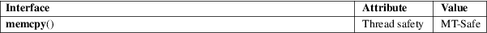

memcpy − copy memory area
Standard C library (libc, −lc)
#include <string.h>
void
*memcpy(void dest[restrict .n],
const void src[restrict .n],
size_t n);
The memcpy() function copies n bytes from memory area src to memory area dest. The memory areas must not overlap. Use memmove(3) if the memory areas do overlap.
The memcpy() function returns a pointer to dest.
For an explanation of the terms used in this section, see attributes(7).

C11, POSIX.1-2008.
POSIX.1-2001, C89, SVr4, 4.3BSD.
Failure to observe the requirement that the memory areas do not overlap has been the source of significant bugs. (POSIX and the C standards are explicit that employing memcpy() with overlapping areas produces undefined behavior.) Most notably, in glibc 2.13 a performance optimization of memcpy() on some platforms (including x86-64) included changing the order in which bytes were copied from src to dest.
This change revealed breakages in a number of applications that performed copying with overlapping areas. Under the previous implementation, the order in which the bytes were copied had fortuitously hidden the bug, which was revealed when the copying order was reversed. In glibc 2.14, a versioned symbol was added so that old binaries (i.e., those linked against glibc versions earlier than 2.14) employed a memcpy() implementation that safely handles the overlapping buffers case (by providing an "older" memcpy() implementation that was aliased to memmove(3)).
bcopy(3), bstring(3), memccpy(3), memmove(3), mempcpy(3), strcpy(3), strncpy(3), wmemcpy(3)